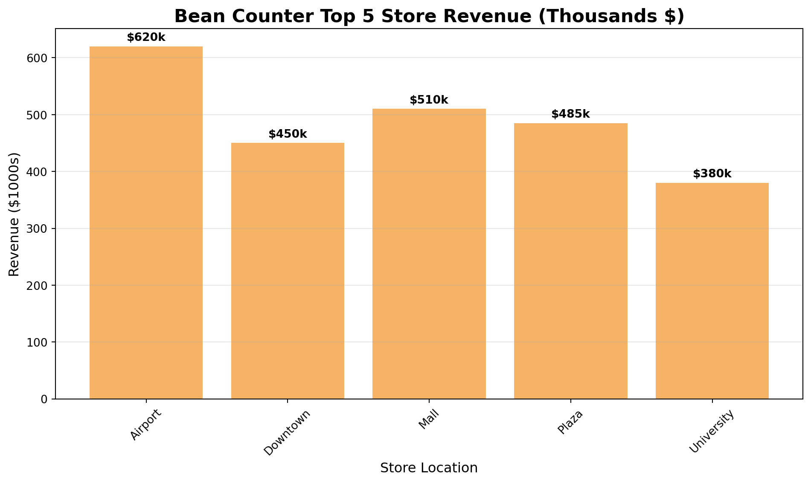
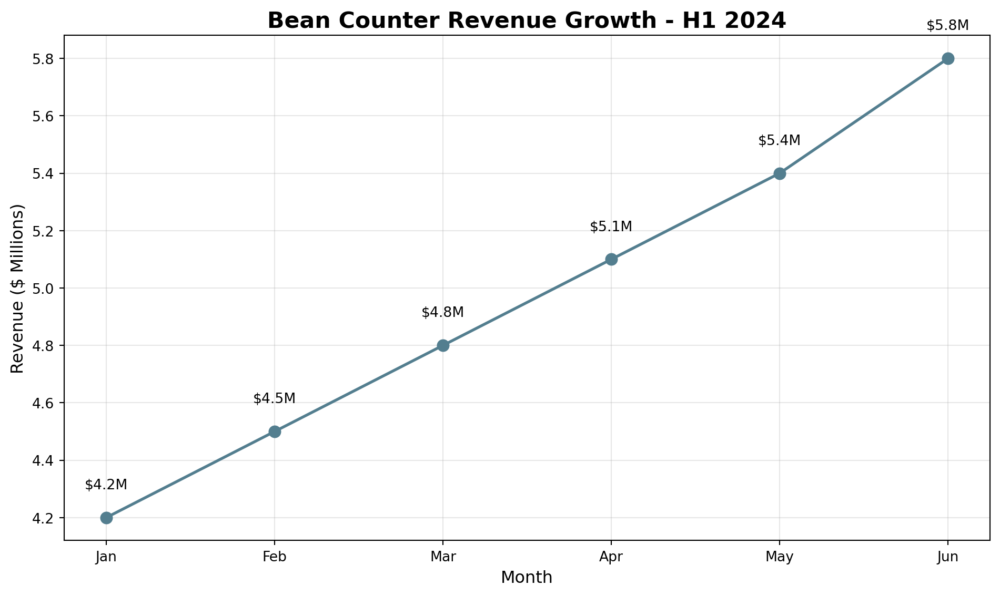

Welcome to your final CEO challenge at Bean Counter!
The Board Meeting Challenge
Tomorrow morning, you’re presenting Bean Counter’s annual performance to the board of directors and potential investors. You have:
Massive datasets analyzed with NumPy
Complex reports created with Pandas
Incredible insights about the business
The Problem: Numbers alone don’t convince boards. They need to SEE the story! A table with 1000 rows won’t inspire investment, but a compelling chart will.
Your Solution:Data Visualization - turning your analyses into powerful visual stories that drive decisions and secure funding.
In this tutorial, you’ll create the visualizations that will secure Bean Counter’s future and cement your legacy as CEO.
WarningHow to Use This Tutorial
Import matplotlib along with pandas and numpy. Remember, we work with uv, so just use uv add matplotlib in the terminal. Now you can create compelling charts for your board presentation!
TipStart practicing generate AI
The creation of plots is a perfect opportunity to start practicing generate AI. Usually you need a lot of code for nice visualizations and most of it is repetitive.
Section 1 - Bar Charts for Performance Comparison
As CEO, you often need to compare performance across stores, products, or time periods. Bar charts are perfect for this.
import pandas as pdimport numpy as npimport matplotlib.pyplot as plt# Top 5 store performancestores = ['Airport', 'Downtown', 'Mall', 'Plaza', 'University']revenue = [620, 450, 510, 485, 380]# Create bar chartplt.figure(figsize=(10, 6))plt.bar(stores, revenue, color='#F6B265')plt.title('Bean Counter Top 5 Store Revenue (Thousands $)', fontsize=16, fontweight='bold')plt.xlabel('Store Location', fontsize=12)plt.ylabel('Revenue ($1000s)', fontsize=12)plt.grid(axis='y', alpha=0.3)plt.xticks(rotation=45)# Add value labels on barsfor i, v inenumerate(revenue): plt.text(i, v +10, f'${v}k', ha='center', fontweight='bold')plt.tight_layout()plt.show()

TipBar Charts Are Your Best Friend
As CEO, bar charts will be your most-used visualization:
Compare stores, products, or departments
Show rankings clearly
Easy for board members to understand
Perfect for “top 10” or “bottom 5” analyses
Exercise 1.1 - Product Performance Bar Chart
Create a bar chart showing Bean Counter’s product sales for the board meeting.
import pandas as pdimport matplotlib.pyplot as plt# Product sales dataproducts_df = pd.DataFrame({'product': ['Latte', 'Espresso', 'Cappuccino', 'Americano', 'Mocha', 'Macchiato'],'units_sold': [3200, 4500, 2800, 2100, 1900, 1500]})# YOUR CODE BELOW# 1. Sort products by units_sold (highest first)products_sorted =# 2. Create a bar chart
Section 2 - Line Plots for Trends Over Time
CEOs need to show growth and trends. Line plots are perfect for time series data.
import pandas as pdimport matplotlib.pyplot as plt# Monthly revenue trendmonths = ['Jan', 'Feb', 'Mar', 'Apr', 'May', 'Jun']revenue = [4.2, 4.5, 4.8, 5.1, 5.4, 5.8]plt.figure(figsize=(10, 6))plt.plot(months, revenue, marker='o', linewidth=2, markersize=8, color='#537E8F')plt.title('Bean Counter Revenue Growth - H1 2024', fontsize=16, fontweight='bold')plt.xlabel('Month', fontsize=12)plt.ylabel('Revenue ($ Millions)', fontsize=12)plt.grid(True, alpha=0.3)# Add value labelsfor i, v inenumerate(revenue): plt.text(i, v +0.1, f'${v}M', ha='center')plt.tight_layout()plt.show()

Exercise 2.1 - Customer Growth Trend
Show the board Bean Counter’s customer growth over the past 8 months.
import pandas as pdimport matplotlib.pyplot as pltimport numpy as np# Customer data (in thousands)months = ['Jan', 'Feb', 'Mar', 'Apr', 'May', 'Jun', 'Jul', 'Aug']customers = [145, 152, 158, 165, 174, 182, 195, 208]# YOUR CODE BELOW# Create a line plot showing customer growth
Section 3 - Histograms for Distribution Analysis
Show the board how metrics are distributed across your empire.
import numpy as npimport matplotlib.pyplot as plt# Simulate customer satisfaction scoresnp.random.seed(42)satisfaction_scores = np.random.normal(4.3, 0.4, 1000)satisfaction_scores = np.clip(satisfaction_scores, 1, 5)plt.figure(figsize=(10, 6))plt.hist(satisfaction_scores, bins=20, alpha=0.7, edgecolor='black')plt.title('Customer Satisfaction Distribution (n=1000)', fontsize=16, fontweight='bold')plt.xlabel('Satisfaction Score', fontsize=12)plt.ylabel('Number of Responses', fontsize=12)plt.axvline(x=satisfaction_scores.mean(), color='red', linestyle='--', linewidth=2, label=f'Mean: {satisfaction_scores.mean():.2f}')plt.legend()plt.grid(axis='y', alpha=0.3)plt.tight_layout()plt.show()
Exercise 3.1 - Store Efficiency Distribution
Show the board how store efficiency is distributed across all locations.
import numpy as npimport matplotlib.pyplot as plt# Simulate efficiency scores for 50 storesnp.random.seed(100)efficiency_scores = np.random.normal(75, 12, 50) # Mean 75, std 12# YOUR CODE BELOW# Create histogram of efficiency distribution
Section 4 - Integrated Analysis with Pandas
Combine Pandas data manipulation with visualization for powerful insights.
Create an integrated dashboard combining NumPy simulation with Pandas analysis and visualization. Create revenue projections for the company:
Start at $6M in January
Grow approximately 2% each month
Add random variation (±25%) to simulate market fluctuations
To create realistic monthly growth:
Start with base revenue of 6.0M
Each month, apply 2% growth: revenue = previous_revenue * 1.02
Add random variation: multiply by np.random.uniform(0.75, 1.25)
import pandas as pdimport numpy as npimport matplotlib.pyplot as plt# Simulate next year's projectionsnp.random.seed(42)months = ['Jan', 'Feb', 'Mar', 'Apr', 'May', 'Jun','Jul', 'Aug', 'Sep', 'Oct', 'Nov', 'Dec']# YOUR CODE BELOW# 1. Create revenue projections for the company# Start with 6.0M, grow each month by 2% with random variationrevenue_projection = []current_revenue =6.0# Starting revenue in millions# Loop through 12 months# 2. Create DataFrame with months and revenue# 3. Calculate cumulative revenue# 4. Create visualization with two subplots
Conclusion
Congratulations! You’ve completed your CEO journey at Bean Counter!
You’ve mastered:
Bar Charts - Comparing performance across stores and products
Line Plots - Showing growth trends over time
Histograms - Understanding distributions of key metrics
Integrated Dashboards - Combining multiple visualizations for comprehensive insights
NumPy + Pandas + Visualization - The complete data science toolkit
Your Bean Counter CEO visualization toolkit enables you to:
Present compelling stories to the board of directors
Identify trends and patterns at a glance
Compare performance across multiple dimensions
Make data-driven decisions with confidence
Communicate complex insights simply and effectively
Remember:
Bar charts are best for comparisons
Line plots show trends over time
Histograms reveal distributions
Always label your axes and add titles
Use colors consistently across related charts
Annotations can highlight key insights
Your Bean Counter Legacy:
From Barista Trainee to CEO, you’ve transformed Bean Counter into a data-driven enterprise.
Standardized operations with functions
Managed complex data with dictionaries
Optimized decisions with sorting algorithms
Processed big data with NumPy’s speed
Analyzed business metrics with Pandas
Communicated insights with powerful visualizations
What’s Next: Armed with these data science foundations, you’re ready for the advanced algorithms in upcoming lectures! You’ll tackle Monte Carlo simulations, forecasting, scheduling optimization, and more. The skills you’ve built here - from basic Python to advanced visualization - will be the foundation for solving complex management science problems!
Solutions
You will likely find solutions to most exercises online. However, I strongly encourage you to work on these exercises independently without searching explicitly for the exact answers to the exercises. Understanding someone else’s solution is very different from developing your own. Use the lecture notes and try to solve the exercises on your own. This approach will significantly enhance your learning and problem-solving skills.
Remember, the goal is not just to complete the exercises, but to understand the concepts and improve your programming abilities. If you encounter difficulties, review the lecture materials, experiment with different approaches, and don’t hesitate to ask for clarification during class discussions.